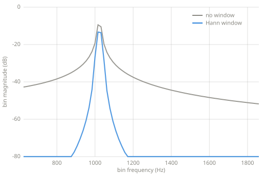
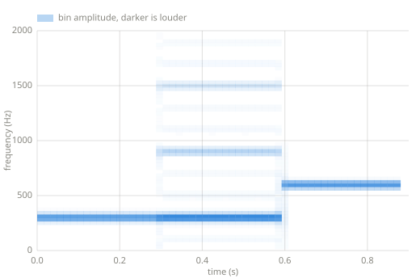

DFT, FFT, STFT¶
The discrete Fourier transform runs every Chapter 8 probe at once: one block of samples in, one complete spectrum out. The FFT computes the same numbers quickly, and the STFT repeats the measurement over time.
Chapter 10 — the transforms.
The DFT¶
Chapter 8 measured one frequency with a pair of probes. The discrete Fourier transform measures all of them. For a block of \(N\) samples, it correlates the block with the frequencies \(k \cdot f_s / N\) for every \(k\), and each bin stores the two probe results as one complex number, so amplitude and phase travel together:
def dft(x):
"""Every Chapter 8 probe at once.
For a block of N samples, bin k correlates the block with frequency
k * sr / N: the real part comes from a cosine probe and the
imaginary part from a sine probe, so each bin holds an amplitude and
a phase together.
"""
n = len(x)
return [sum(x[m] * cmath.exp(-2j * cmath.pi * k * m / n)
for m in range(n))
for k in range(n)]
def magnitudes(bins):
"""Bin amplitudes on the Chapter 8 scale: a full-scale sine at a bin
frequency reads 1.0. Bins above N/2 mirror the ones below it."""
n = len(bins)
return [2.0 * abs(b) / n for b in bins[:n // 2]]
The bin spacing is \(f_s / N\). A larger block resolves finer frequency differences and covers a longer stretch of time, so one number controls both, and no block length gives fine frequency detail and fine time detail at once.
The FFT¶
The DFT above computes \(N\) sums of \(N\) terms. The fast Fourier transform produces the same bins in about \(N \log N\) steps by splitting the block into its even and odd samples, transforming each half, and combining:
def fft(x):
"""The same bins as dft, computed in N log N steps (Cooley-Tukey).
The length must be a power of two. The split works because the
even-indexed and odd-indexed samples each form a half-length
transform, and every full-length bin is one twiddle-factor
combination of the two.
"""
n = len(x)
if n == 1:
return [complex(x[0])]
if n % 2:
raise ValueError("fft needs a power-of-two length")
even = fft(x[0::2])
odd = fft(x[1::2])
out = [0j] * n
for k in range(n // 2):
tw = cmath.exp(-2j * cmath.pi * k / n) * odd[k]
out[k] = even[k] + tw
out[k + n // 2] = even[k] - tw
return out
def ifft(bins):
"""Samples back from bins: the inverse transform."""
n = len(bins)
swapped = fft([b.conjugate() for b in bins])
return [s.conjugate().real / n for s in swapped]
The bins are identical to the DFT's; only the cost changes. The FFT is the reason transforming audio is cheap enough to run inside effects, and the reason block lengths are usually powers of two.
Windows¶
Chapter 8 noted that a probe over partial cycles reports amplitude at frequencies the signal does not contain, and named the error spectral leakage. A block of \(N\) samples cuts almost every real frequency mid-cycle, so the DFT leaks by default. The standard treatment multiplies the block by a window, a curve that fades the frame in and out so its edges no longer jump:
def hann(n):
"""The Hann window: a raised cosine that fades a frame in and out."""
return [0.5 - 0.5 * math.cos(2.0 * math.pi * m / n) for m in range(n)]

A 1023 Hz sine, between bins, transformed both ways. Without a window the tone leaks across every bin. The Hann window trades a slightly wider peak for leakage that falls away by tens of dB.
The STFT¶
A single spectrum describes a steady signal. The short-time Fourier transform describes a changing one: slice the signal into overlapping frames, window each frame, and transform each window. The result is a spectrum per frame, and drawing them side by side is a spectrogram:
def stft(x, frame=512, hop=256):
"""Windowed FFTs of overlapping frames: spectra over time."""
w = hann(frame)
frames = []
pos = 0
while pos + frame <= len(x):
frames.append(fft([x[pos + m] * w[m] for m in range(frame)]))
pos += hop
return frames
def istft(frames, frame=512, hop=256):
"""Overlap-add resynthesis.
With the Hann window and hop = frame / 2, the shifted windows sum to
one, so away from the first and last half frame the signal returns
exactly.
"""
n = hop * (len(frames) - 1) + frame
out = [0.0] * n
for i, bins in enumerate(frames):
y = ifft(bins)
for m in range(frame):
out[i * hop + m] += y[m]
return out

The STFT of a 300 Hz sine, then a 300 Hz square, then a 600 Hz sine, generated with the code above. The sine is one line, the square is the odd-harmonic stack of Chapter 8, and the higher sine is one line again, higher.
The inverse path matters as much as the forward one. istft adds the overlapping frames
back together, and with the Hann window at half-frame overlap the shifted windows sum to
one, so a signal survives the round trip unchanged. Chapter 11
edits the bins between the two directions.
Key parameters¶
| Parameter | What it controls |
|---|---|
| Frame length | Frequency resolution against time resolution: \(f_s / N\) bin spacing over \(N / f_s\) seconds of blur. |
| Hop | How far the frame advances per spectrum; half the frame length here. |
| Window | How the frame's edges fade; Hann on this page. |
Pitfalls
- This page's FFT requires power-of-two lengths. General lengths have fast algorithms, and practical libraries provide them; the constraint belongs to the radix-2 split, not to the transform.
- Bins are evenly spaced in frequency, and musical pitch is not. The octave from 100 to 200 Hz spans six bins at this page's settings, and the octave from 3200 to 6400 Hz spans two hundred, so low notes blur together in a spectrogram long before high ones.
- Phase is half the data. Amplitude spectra read well, and resynthesis without the phases produces a different signal, which Chapter 11 turns into an effect on purpose.
Where this leads¶
Chapter 11 runs effects inside the transform: analyze, change the bins, resynthesize.
Learn more¶
- Julius O. Smith III, Mathematics of the DFT, ccrma.stanford.edu/~jos/mdft — the transform with proofs.
- Steven W. Smith, The Scientist and Engineer's Guide to Digital Signal Processing, dspguide.com — the FFT chapter walks the split in detail.
- J. W. Cooley and J. W. Tukey, "An Algorithm for the Machine Calculation of Complex Fourier Series," Mathematics of Computation, 1965 — the FFT paper.